1088C10 WATER PUMP - R + R
- Path
- Procedures > 10 ENGINE > 1088 ENGINE COOLING > 1088C WATER PUMP AND THERMOSTAT > 1088C10 WATER PUMP - R + R
- Kind
- repair procedure (removal / refitting; the operation number is the code)
- Applies to
- engines: 1.8, 2.2; all production periods
- Interactive page
- https://sloeber94.github.io/elrnDB-fCrm/en/#/194000401
Applies to: engines: 2.2; all production periods
 Removing
Removing
 Refitting
Refitting- Position the vehicle on a lift.
- Make sure that the ignition key is in the OFF position, then disconnect the battery terminal (-).
Description | Connector | |
|---|---|---|
- | Battery |
1. Remove the sound insulation cover fastened to the engine by three pins.
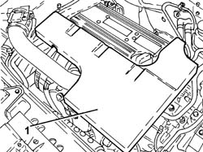
Applies to: engines: 2.2; all production periods
1. Disconnect the electrical connection for the front Lambda sensor to the catalytic converter.
Description | Connector | |
|---|---|---|
1 | Lambda sensor on catalyzer |
2. Disconnect the electrical connection for the rear Lambda sensor to the catalytic converter.
Description | Connector | |
|---|---|---|
2 | Lambda sensor on catalyzer - 2 |
3. Undo the fastenings and remove the eletrical connections mounting bracket.
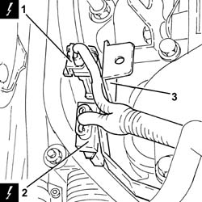
Applies to: engines: 2.2; all production periods
1. Undo the front Lambda sensor from the catalytic converter and remove it.
2. Undo the bolts (2a) and remove the heat shield (2b).
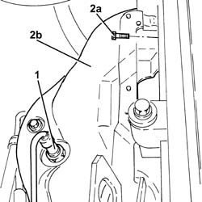
Applies to: engines: 2.2; all production periods
Op. 4450B04 RIGHT FRONT WHEEL - R.R
Op. 7055B66 ENGINE COMPARTMENT DUST COVER IN RIGHT FRONT WHEEL ARCH - R.R.
1. Undo the coolant drain plug in the water pump and drain the coolant.
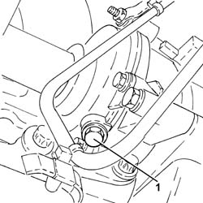
Applies to: engines: 2.2; all production periods
1. Disconnect the electrical connection from the engine coolant temperature sensor.
Description | Connector | |
|---|---|---|
1 | Engine coolant temperature sensor/sender unit |
2. Loosen the collar and disconnect the upper coolant input sleeve to the radiator, thermostat side.
3. Loosen the bands and disconnect the coolant delivery and return pipes to the climate control system heater, thermostat side.
4. Undo the engine coolant temperature sensor and remove it.
5. Undo the bolts (5a) and remove the thermostat (5b) complete with water pump rigid fluid inlet pipe (5c) and O-rings (5d).
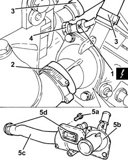
Applies to: engines: 2.2; all production periods
1. Loosen the nut fixing the electric wiring mounting bracket.
2. Undo the bolts (2a) and remove the water pump cover (2b), complete with seal.
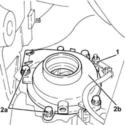
Applies to: engines: 2.2; all production periods
1. Undo the bolts (1a) and remove the water pump service cover (1b) from the timing chain cover.
2. Remove the gasket.
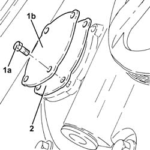
Applies to: engines: 2.2; all production periods
1. Fit the tool (1a) for securing the water pump drive pulley and fasten with two bolts (1b) to the timing chain cover and with three bolts (1c) to the water pump drive pulley.
Tool | Description | Function | Validity |
|---|---|---|---|
2000001200 | Flange | Securing water pump pulley | 2.2 |
2. Undo the three bolts fixing the drive pulley to the water pump.
3. Undo the two bolts fixing the water pump to the engine block.
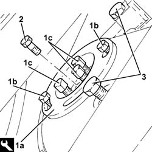
Applies to: engines: 2.2; all production periods
1. Undo the remaining bolt (1a) and remove the water pump (1b) complete with O-ring.
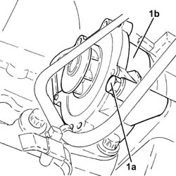
Applies to: engines: 2.2; all production periods
Refitting
Removing-Clean the surfaces of the water pump.
- Place the water pump, complete with new O-ring in its housing and secure it tightening the bolts to the recommended torque.
Component | Fastening | dia | Value (daNm) | Validity |
|---|---|---|---|---|
Water pump | Bolt | M8 X 1.25 | (engine crankcase side) 2.3 | 2.2 |
- Tighten the bolts fixing the drive pulley to the water pump to the recommended torque.
Component | Fastening | dia | Value (daNm) | Validity |
|---|---|---|---|---|
Water pump drive pulley | Bolt | M6 x 1 | (water pump side) 0.8 | 2.2 |
- Remove the tool used for securing the water pump drive pulley.
Tool | Description | Function | Validity |
|---|---|---|---|
2000001200 | Flange | Securing water pump pulley | 2.2 |
1. Place the water pump cover (1a), complete with a new seal, back in its housing and secure it tightening the bolts (1b) to the recommended torque.
Component | Fastening | dia | Value (daNm) | Validity |
|---|---|---|---|---|
Water pump cover | Bolt | M6 x 1 | (water pump side) 0.8 | 2.2 |
2. Tighten the nut fixing the electric wiring mounting bracket.
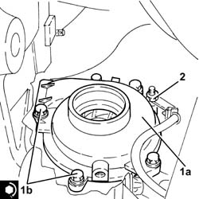
Applies to: engines: 2.2; all production periods
1. Tighten the coolant drain plug to the water pump to the recommended torque.
Component | Fastening | dia | Value (daNm) | Validity |
|---|---|---|---|---|
Drain plug on water pump | - | M20 x 1.5 | (water pump side) 2.0 | 2.2 |
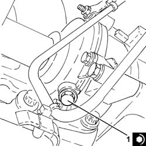
Applies to: engines: 2.2; all production periods
1. Place the water pump service cover (1a), complete with a new gasket, back in its housing and secure it tightening the bolts (1b) to the recommended torque.
Component | Fastening | dia | Value (daNm) | Validity |
|---|---|---|---|---|
Water pump service cover | Bolt | M6 x 1 | (side) 0.7 | 2.2 |
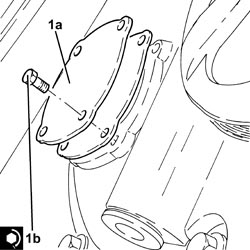
Applies to: engines: 2.2; all production periods
1. Place the thermostat (1a) complete with water pump rigid coolant inlet pipe (1b) and new O-rings (1c) back in its housing and secure it tightening the bolts (1d) to the recommended torque.
Component | Fastening | dia | Value (daNm) | Validity |
|---|---|---|---|---|
Thermostat unit | Bolt | M6 x 1 | (engine crankcase side) 0.6 - 1.0 | 2.2 |
2. Place the engine coolant temperature sensor in its housing and tighten it to the recommended torque.
Component | Fastening | dia | Value (daNm) | Validity |
|---|---|---|---|---|
Engine coolant temperature sensor | - | M12 x 1.5 | (thermostat unit side) 2.1 | 2.2 |
4. Connect the upper coolant input sleeve to the radiator, thermostat side, and tighten the band.
5. Connect the electrical connection to the engine coolant temperature sensor.
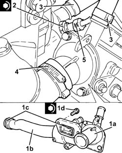
Applies to: engines: 2.2; all production periods
Op. 7055B66 ENGINE COMPARTMENT DUST COVER IN RIGHT FRONT WHEEL ARCH - R.R.
Op. 4450B04 RIGHT FRONT WHEEL - R.R
- Place the heat shield back in its housing and secure it using the bolts.
- Position the front Lambda sensor in its housing and tighten it to the recommended torque.
Component | Fastening | dia | Value (daNm) | Validity |
|---|---|---|---|---|
Front Lambda sensor to catalytic converter | - (with special black grease) | M18 x 1.5 | (exhaust manifold with catalytic converter side) 4.0 | 2.2 |
- Place the electrical connections mounting bracket in its housing and secure it.
- Connect the electrical connection for the rear Lambda sensor to the catalytic converter.
- Connect the electrical connection for the front Lambda sensor to the catalytic converter.
- Place the sound insulation cover back in its housing and secure it to the engine using the three pins.
- Connect the negative battery terminal.
Op. 0010T20 ENGINE COOLANT - CHANGE
- Remove the vehicle from the lift.
Applies to: engines: 1.8; all production periods
Removing
RefittingOp. 1048A10 AIR FILTER ASSEMBLY - R.R.
Op. 1088C22 WATER PUMP PULLEY - R.R.
Op. 0010T20 ENGINE COOLANT - CHANGE
1. Undo the bolts (1a) and remove the water pump (1b) complete with gasket.
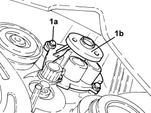
Applies to: engines: 1.8; all production periods
Refitting
Removing- Refit the water pump, complete with new gasket, in its housing and secure it tightening the bolts to the recommended torque.
Component | Fastening | dia | Value (daNm) | Validity |
|---|---|---|---|---|
Water pump | Bolt | - | 0.8 | 1.8 |
Op. 1088C22 WATER PUMP PULLEY - R.R.
Topics linked from this page (9)
- 0010T20 ENGINE COOLANT - CHANGE
- 1048A10 AIR FILTER ASSEMBLY - R.R.
- 1088C22 WATER PUMP PULLEY - R.R.
- 4450B04 RIGHT FRONT WHEEL - R.R
- 7055B66 ENGINE COMPARTMENT DUST COVER IN RIGHT FRONT WHEEL ARCH - R.R.
- A001 BATTERY
- K017 LAMBDA SENSOR ON CATALYZER
- K018 LAMBDA SENSOR ON CATALYZER - 2
- K036 ENGINE COOLANT TEMPERATURE SENSOR/SENDER UNIT